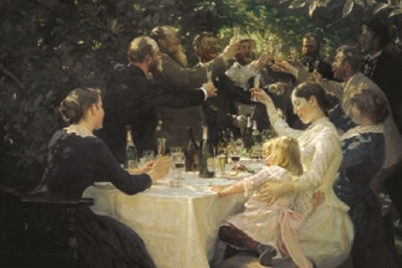
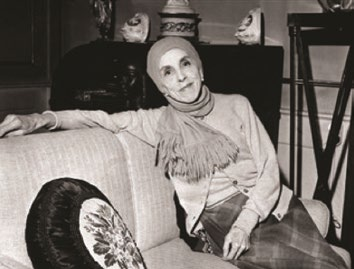
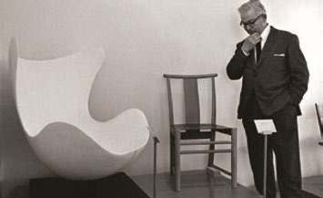

Fakta-ark 22: Dansk kultur
Áudio
sidde 122
Fakta-ark 22: Dansk kultur
Læremateriale Til Medborgerskabsprøven

sidde 123
Der er en lang tradition for litteratur, teater, billedkunst, musik, arkitektur og film i Danmark.
Læremateriale Til Medborgerskabsprøven Fakta-Ark 22: Dansk Kultur
Dette fakta-ark handler om: • Vigtige skikkelser fra dansk kultur
1700-Tallet
Ludvig Holberg (1684-1754) er også blevet kaldt ’dansk litteraturs far’. Han voksede op i den norske by Bergen. Han flyttede som ung til Danmark, hvor han tilbragte hele sit voksne liv, som professor ved universitetet i København. Og som en meget flittig forfatter.
Han lagde grunden til dansk teater med komedier som ’Jeppe på Bjerget’. Og han skrev ’Epistler’ – det vil sige korte prosatekster – om oplysningstidens ideer: tolerance, god undervisning, ligeret mellem mænd og kvinder. Holberg blev berømt i Europa med romanen ’Niels Klims underjordiske rejse’ (1741), hvor han, ligesom i Epistlerne, udbreder sine filosofiske ideer.
1800-Tallet
H.C. Andersen (1805-1875) var en dansk forfatter, der blev verdensberømt for sine eventyr. H.C. Andersen blev født i Odense som søn af en fattig skomager. Han flyttede til København, da han var 14 år. Han skrev bl.a. romaner, digte og eventyr. H.C. Andersens eventyr er oversat til ca. 125 sprog. Blandt hans mest kendte eventyr er ’Grantræet’ og ’Den Grimme Ælling’. Disse eventyr viser Ander sens særlige evne til at udstyre dyr og planter med menneskelige stemmer og med dyr og planter at fortælle om menneskers fejl og drømme.
Søren Kierkegaard (1813-1855) var en dansk filosof, hvis tanker om menneskets eksistens har påvirket folk i mange lande helt op til i dag. Han understregede menneskers ret og pligt til at træffe valg om deres eget liv. Hvor vigtigt valget er for ham, kan man høre på en af hans kendteste titler, ’Enten-eller’ (1843).
P.S. Krøyer (1851-1909) var en dansk kunstmaler. P.S. Krøyer blev født i Stavanger i Norge, men han boede det meste af sit liv i Danmark. Han blev uddannet på Kunstakademiet i København. I 1880’erne og 1890’erne var han med i en gruppe af kunstnere, som boede i Skagen i Nordjylland for at arbejde. De malerier, som han malede i Skagen, er meget berømte i Danmark, og en række af dem kan ses på Skagens Museum.Hip, hip, hurra! Malet af P.S. Krøyer i 1888. Hip, hip, hurra! Malet af P.S. Krøyer i 1888.


sidde 124
1900-Tallet
Læremateriale Til Medborgerskabsprøven Fakta-Ark 22: Dansk Kultur
Carl Nielsen (1865-1931) var en dansk komponist. Med korværker og symfonier bidrog han til den internationale koncertsalskultur. Fx symfonien ’Det uudsluk kelige’ (1916).
Han har også komponeret musik til danske digte, der gjorde dem til vidt udbredte sange som ’Jens Vejmand’, ’Solen er så rød, mor’, ’Den danske sang er en ung blond pige’.
Karen Blixen (1885-1962) var en dansk forfatter. Karen Blixen ejede og bestyrede i mange år en kaffefarm i Kenya. Hendes oplevelser på farmen blev grundlag for hendes bog ’Den afrikanske farm’, som hun skrev i 1937, efter at farmen var solgt, og hun var vendt tilbage til Danmark. ’Den afrikanske farm’ er også blevet filmatiseret i USA.
Karen Blixen er også kendt for en særlig slags historiske noveller, som man kan finde i for eksempel ’Syv fantastiske fortællinger’ (1935).
En anden kendt forfatter er Tove Ditlevsen (1917-76). Hun voksede op i en fattig familie på Vesterbro i København, og hun drømte allerede som barn om at blive digter, selv om hendes far sagde, at det kunne piger ikke blive. Hun skrev både digte og romaner om at være barn, kvinde og fattig i datidens samfund, og blandt hendes hovedværker er Barndommens Gade (1943) samt bøgerne Barndom (1967), Ungdom (1967) og Gift (1971).
Arne Jacobsen (1902-1971) var en dansk arkitekt, der er kendt for ’funk tionalisme’, det vil sige en udform ning af huse og møbler, der lægger vægt på, hvad de skal bruges til. Han har tegnet Danmarks Nationalbank i København.
Blandt hans møbler er det mest udbredte ’7-eren’, en hverdagsstol fremstillet af krydsfinér og metal. Og den eksklusive lænestol opkaldt efter det, den ligner: ’Ægget’.Karen Blixen.Arne Ja
sidde 125
2000-Tallet
Læremateriale Til Medborgerskabsprøven Fakta-Ark 22: Dansk Kultur
Thomas Vinterberg (født 1969) er en dansk filminstruktør. Blandt andet har han lavet filmen ’Druk’ (2020), som vandt en Oscar i 2021. I ’Druk’ forsøger fire gymna sielærere at gøre deres liv mere spændende ved at drikke, så de har alkohol i blodet hele dagen. Det går godt i begyndelsen, men efterhånden kommer det ud af kontrol og ender i en tragisk ulykke.
Mange af Thomas Vinterbergs film fortæller historier om dilemmaer i fami lien. Mellem de voksne og mellem forældre og børn. Det kan være om seksuelt misbrug, ’Festen’ (1998), om falske beskyldninger, ’Jagten’ (2012) eller om bristede håb, ’Kollektivet’ (2016).
I 1990’erne havde den dansk-norske musikgruppe Aqua stor succes med deres popmusik. Særligt nummeret ’Barbie Girl’ var et globalt hit. Aqua solgte i alt 28 millioner cd’er og er dermed et af de mest sælgende danske bands nogensinde. Musikgrupp
En anden dansk filminstruktør – Susanne Bier (født 1960) – har også vundet en Oscar for ’Hævnen’ (2010), som sætter fokus på i hvilke situationer i livet, det er henholdsvis rigtigt og forkert at hævne sig på andre.
Danmark har vundet Eurovision Song Contest (Det Europæiske Melodi Grand Prix) tre gange. Første gang var i 1963 med ’Dansevise’, som blev fremført af Grethe Ingmann (1938-90) og Jørgen Ingmann (1925-2015). Anden gang i år 2000 med ’Smuk som et stjerneskud/Fly on the Wings of Love’, skrevet og frem ført af duoen Brødrene Olsen, der består af Jørgen Olsen (født 1950) og Niels Olsen (født 1954). Tredje gang var i 2013 med ’Only Teardrops’, som blev sunget af Emmelie de Forest (født 1993).
Musikgruppen Aqua i 1998.
En anden kunstner er dansk-islandske Olafur Eliasson (født 1967). Et af hans mest kendte værker er ’Your rainbow panorama’ (Din regnbueudsigt) (2011) oven på kunstmuseet ARoS i Aarhus, som er en 150 meter lang cirkelformet gangbro i glas, hvor man kan se ud over Aarhus i alle regnbuens farver. Your Rainbow Panorama, Olafur Eliasson 2011, ARo
sidde 126
Læremateriale Til Medborgerskabsprøven Fakta-Ark 22: Dansk Kultur
Your Rainbow Panorama, Olafur Eliasson 2011, ARoS Aarhus Kunstmuseum. Foto: Tue Schou Pedersen.
Forfatteren Yahya Hassan (1995-2020) debuterede med digtsamlingen ’Yahya Hassan’ (2013). Samlingen er den digtsamling, som har solgt flest eksemplarer (over 100.000) i Danmark nogensinde. Hassans digte om at vokse op og være ung som indvandrer i et ghettokvarter* skabte voldsom debat, fordi de pegede på problemer og på sammenstød mellem danske normer og normerne i socialt belastede indvandrermiljøer.
Fonte: Læremateriale til Medborgerskabsprøven, SIRI.